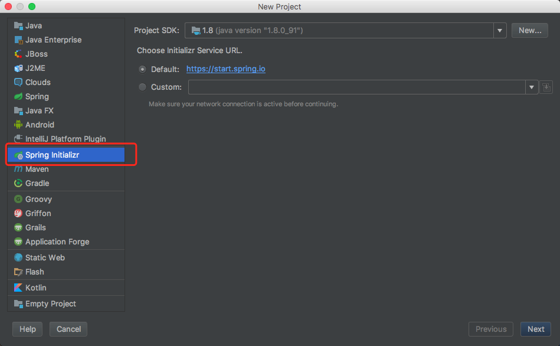
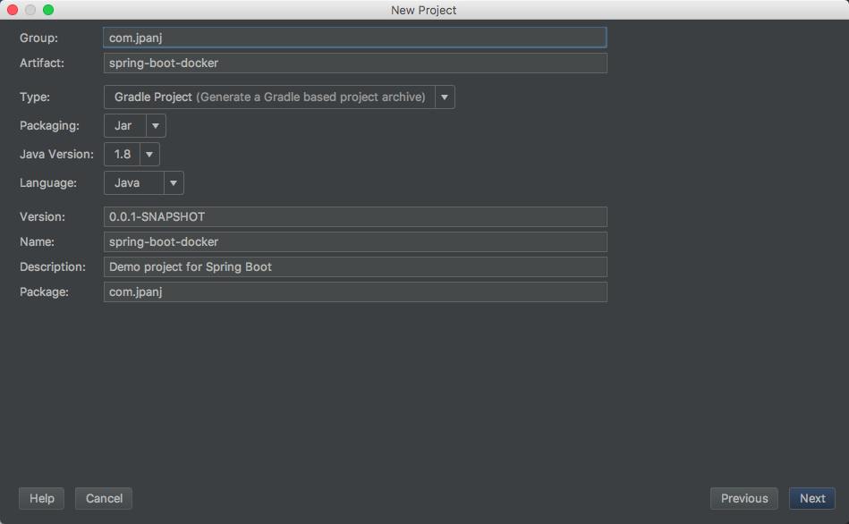
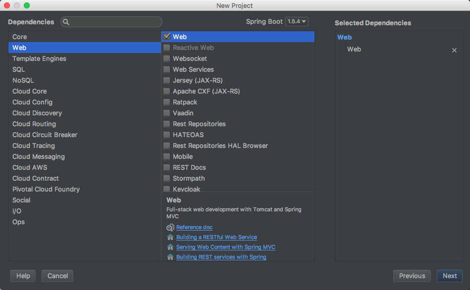
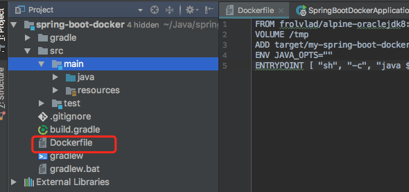
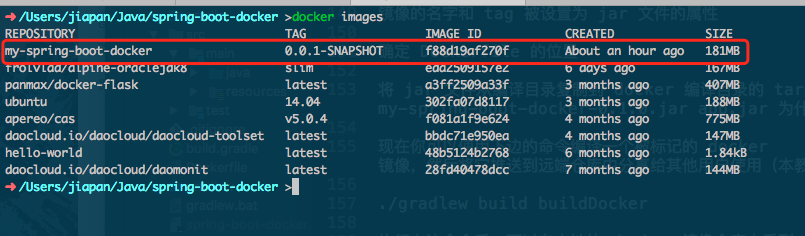
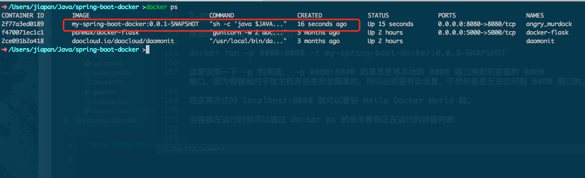
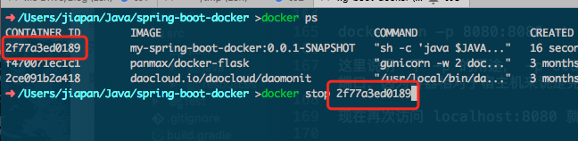

Docker 是一个具有社交倾向的 Linux 容器管理工具包，允许用户发布容器镜像，其他用户可以使用这些镜像。Docker 镜像是运行容器化进程的基础，本文将介绍如何编译一个简单的
Spring Boot应用的镜像。
Docker 的安装和基本使用不在本文中介绍，之后可以单独拿出来写一写。
本文将使用 Gradle 作为编译工具，基础项目工程直接使用 IDEA 的 Spring Initializr 生成，如下图：

直接下一步，注意这里的 Type 修改为 Gradle Project，然再下一步

然后只需要勾选 Web 即可

我们来简单调整一下 build.gradle，新增：
1 | jar { |
它的作用是让编译出来的 jar 包文件名为：my-spring-boot-docker-0.1.0.jar
此时 build.gradle 如下：
1 | buildscript { |
然后我们写一个最简单的 Controller，为了方便直接写在 main 方法的类中：
1 | package com.jpanj; |
现在我们在不使用 Docker 容器 的情况下运行这个应用：
1 | ./gradlew build |
然后访问 localhost:8080 可以看到 Hello Docker World 的返回结果。
接下来让我们把它容器化吧
Docker 有一个简单的 Dockerfile 文件格式用来指定生成镜像的层次，所以我们在 Spring Boot 项目中创建一个 Dockerfile，将这个文件放在项目根目录下即可，现在这个项目结构是这个样的：

Dockerfile 内容如下：
1 | FROM frolvlad/alpine-oraclejdk8:slim |
这个 Dockerfile 非常简单，不过这就是你运行一个 Spring Boot 应用的全部了，只需要 Java 和 JAR 文件就够了。这个项目 JAR 文件被作为 app.jar 加入到容器中，然后通过 ENTRYPOINT 来执行它。
Docker容器 运行时应该尽量保持容器存储层不发生写操作，在这里我们添加一个 VOLUME 指向 /tmp 是因为 Spring Boot 应用在默认情况下会为 Tomcat 创建工作目录。这里的 /tmp 目录就会在运行时自动挂载为匿名卷，任何向 /tmp 中写入的信息都不会记录进容器存储层，从而保证了容器存储层的无状态化。
当然，也可以在运行时可以覆盖这个挂载设置
docker run -d -v mytmp:/tmp xxxx
在这行命令中，就使用了 mytmp 这个命名卷挂载到了 /tmp 这个位置，替代了 Dockerfile 中定义的匿名卷的挂载配置。
不过此步骤在这个简单的应用中是可选的，但是在其他会写入文件系统的 Spring Boot 应用中是必须的。
接下来就是把这个项目编译成一个可以到处运行的 Docker 镜像了，在 build.gradle 中我们添加一些新的插件：
1 | buildscript { |
上边的配置做了这 3 件事：
- 镜像的名字被设置为 jar 配置的 baseName 属性
- 确定 Dockerfile 的位置
- 将
jar文件从编译目录复制到docker编译目录的target目录下，这就是我们在 Dockerfile 中看到的ADD target/my-spring-boot-docker-0.1.0.jar app.jar为什么会生效的原因。
此时完整的 build.gradle 如下：
1 | buildscript { |
现在你可以使用下边的命令编译这个 docker 镜像，然后将它推送到远端仓库中分享给其他用户使用（本教程不介绍推送远端仓库的方法）。
./gradlew build buildDocker
执行上边命令后，可以在本地的 docker 镜像仓库中看到，已经有了我们自己编译出来的 my-spring-boot-docker 镜像：

然后你就可以像这样来运行它了：
docker run -p 8080:8080 -t my-spring-boot-docker:0.0.1-SNAPSHOT
这里说明一下 -p 的用途， -p 8080:8080 的意思是将本地的 8080 端口映射到容器的 8080 端口，因为容器相对于主机来说是完全隔离的，所以必须要有此设置，不然外部是无法访问到 8080 端口的。
现在再次访问 localhost:8080 就可以看到 Hello Docker World 啦。
当容器运行时你可以通过 docker ps 的命令看到正在运行的容器列表：

而且可以通过 docker stop 加上这个容器的 ID 来停掉它：

如果你想删掉这个容器，可以使用 docker rm + 容器 ID。
到此你已经为 Spring Boot 应用创建了一个 docker 容器，默认运行在容器内的 8080 端口上，我们在命令行中使用 -p 参数将它映射到主机的相同端口上。